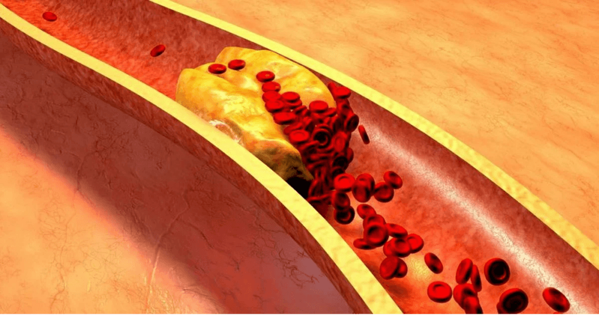

Всем известно, что гипертония, инсульт и инфаркт - это последствия "загрязнения" кровеносных сосудов холестерином. Грязные сосуды являются причиной 9 из 10 якобы неизлечимых хронических заболеваний. Так что же такое гипертония и чем она опасна?
Гипертония - это заболевание, которым страдает каждый третий взрослый житель Италии. В то же время большая часть населения не знает об этой проблеме и поэтому не прибегает к какой-либо профилактике. Среди людей, которые знают о своем заболевании, многие не получают адекватного лечения: они принимают лекарства нерегулярно и в слишком малых дозах или не принимают их вовсе. Такое отношение к своему здоровью вызывает множество опасных для жизни осложнений.
Чтобы избежать этого, необходимо сначала получить ответ на следующие вопросы:

-
Что должен знать человек о гипертонии?
-
Почему кровеносные сосуды отвечают за 85% вашего здоровья?
-
Что еще отравляет кровеносные сосуды, кроме холестерина?
-
4 явных и 7 скрытых признаков плохих сосудов.
-
Как безопасно очистить кровеносные сосуды в домашних условиях?
На эти вопросы ответил Массимо Массетти, итальянский кардиохирург, нынешний директор сердечно-сосудистого направления и кардиохирургии в Фонде Клиники А. Джемелли в Риме, заведующий кафедрой кардиохирургии в Католическом университете Святого Сердца в Риме.
Бруно Каппелли: “Профессор, вы всегда говорите, что кровеносные сосуды отвечают за 85% здоровья организма? Почему так обстоит дело?"
Массимо Мазетти: “Какой самый большой орган в человеческом теле? Мало кто знает, но на самом деле самый большой орган - это наша кровеносная система. Сосуды - это не просто трубки, по которым течет кровь. Это единый сложный орган, проблемы которого немедленно приводят к болезненным ощущениям.
Что же происходит, если сосуды не лечить:
Заболевания сосудов ног - варикозное расширение вен, постоянные отеки и тяжесть в ногах, ощущение холода или нестерпимого жжения в ступнях.
Закупорка сосудов, питающих печень - гепатит. После употребления жирной пищи - горькая отрыжка.
Кровеносные сосуды в суставах, ослабленные и загрязненные - сухие хрящи. Суставы становятся ломкими и болезненными, остеохондроз одолевает, появляются грыжи.
Сосуды анального канала ослабевают - геморроидальные узлы покрываются фиолетовыми шишками.
Слабые сосуды глаз – ухудшается зрение, появляется рябь в глазах. Развивается катаракта.
И, конечно же, королева сосудистых заболеваний, Ее Величество -
гипертония. Гипертония - мать инсульта и сестра сердечного приступа.
«Не бывает счастья без здоровья" - и не бывает здоровья без чистых кровеносных сосудов»
Например, избыточный вес тесно связан с кровеносными сосудами Кровеносные сосуды, забитые холестерином, приводят к тому, что органы недостаточно питаются, кровеносные сосуды не могут снабжать их необходимым количеством питательных веществ. В связи с этим мозг посылает сигналы - нужно поесть. А органам по-прежнему не хватает питания из-за закупорки кровеносных сосудов. Мозг снова дает команду - надо поесть. И так снова и снова.
Хотите жить полноценной жизнью? Очистите и восстановите свои кровеносные сосуды. Чистые кровеносные сосуды - это ключ к преодолению 90% хронических заболеваний, некоторые из которых считаются неизлечимыми.
«Если нормальная площадь поперечного сечения сосуда равна толщине пальца, то 5 кг холестериновых бляшек уменьшают площадь поперечного сечения до размера 4 спичечных палочек.»
Бруно Каппелли:
«Профессор, все знают, что холестерин вреден для людей. Именно он закупоривает наши сосуды, ограничивает кровоток и нарушает циркуляцию крови. Но разве только он виноват?»
Массимо Мазетти: «Да, именно так. Холестериновые бляшки, также известные как "атеросклеротические бляшки"»,
ответственны примерно за 60-70% загрязнения сосудов. К 50 годам накапливается до 5 кг холестериновых бляшек. Холестериновые отложения ограничивают кровоток в сосудах в 4-5 раз.

Если вам больше 45 лет и вы никогда не принимали нутрицевтики для очищения сосудов, я гарантирую, что у вас есть проблемы с сосудами. Кровеносные сосуды забиваются холестерином, образуются тромбы - почти естественные процессы старения. Конечно, современные продукты питания, таблетки, курение и алкоголь ускоряют процесс засорения в 5-8 раз. Малейший стресс, перемена погоды, магнитная буря, сразу же отражаются на здоровье. Повышается давление, появляется головокружение, шум в ушах, голова начинает раскалываться, болят суставы.
4 Заболевания, вызванные поражением кровеносных сосудов:
-
1. "Гипертония"
Основным симптомом гипертонии являются головные боли. Это происходит из-за сужения кровеносных сосудов в головном мозге. Кроме того, частыми симптомами гипертонии являются ощущение тяжести в голове, учащенное сердцебиение и головокружение.
-
2. "Варикозное расширение вен"
Вены на ногах опухшие, неправильной и неестественной формы, тяжелые и болезненные. Холестерин и тромбы закупоривают вены. Постепенно в глазах появляются сосудистые "звездочки", которые затем превращаются в сосудистую "сеть".
-
3. "Геморрой"
Когда дренажные сосуды в заднем проходе закупориваются, геморроидальные узлы набухают. Если сначала закупориваются кровеносные сосуды, то возникают трещины в анусе, а затем разрыв.
-
4. "Остеохондроз"
Это недостаток кровообращения в хряще. Хрящ твердеет и начинает изнашиваться, не имея времени на восстановление. Он теряет способность поддерживать себя. Соли не вымываются и начинают бесконтрольно накапливаться, образуя кистообразные образования.
7 признаков опасности:
-
1. "Отек"
Вечером ноги отекают, носки стягивают лодыжки, оставляя следы. Опухшее лицо и мешки под глазами. Отеки указывают на то, что ваши органы опухли.
-
2. "Шум в ушах"
От едва слышного писка до громких криков, мешающих сосредоточиться. Это последствия повышенного давления сосудов головного мозга, давящих на барабанную перепонку.
-
3. "Головокружение"
Ощущение "опьянения", резкие и внезапные приступы головокружения свидетельствуют о том, что сосудистая система "голодает". Часто страдает и слух.
-
4. "Бессонница"
Чувствуете сонливость и вялость, но не можете заснуть? Причина - недостаточное кровоснабжение гипофиза. Он перестает вырабатывать мелатонин - гормон сна.
-
5. "Усталость"
У вас нет энергии. Не хочется ничего делать. Хочется просто прилечь. Это чувство возникает, когда ваше тело переходит в режим экономии энергии. Ваши органы не получают достаточного питания через загрязненные кровеносные сосуды, и организм пытается снизить уровень активности, чтобы избежать смерти.
-
6. "Проблемы со зрением"
"Мушки" перед глазами, темнота и туман в глазах. Это симптомы сосудистой недостаточности глаз.
-
7. "Боль в суставах"
Из-за погоды - боль в суставах. Проснувшись утром, вы чувствуете себя не бодрым и отдохнувшим, а как онемевший, полупарализованный калека. Синовиальная жидкость теряет свои свойства, склеивает суставы, как клей.
Обычно люди в различных комбинациях имеют более одного симптома в одно и то же время. В то же время они также имеют в разных комбинациях разные симптомы. Бедные люди пытаются лечить каждую болезнь отдельно. Таблетки от давления, кремы от варикозного расширения вен, лекарства от геморроя, гели от остеохондроза. И, конечно, обезболивающие. Они просто выбрасывают деньги на ветер, но причина всех болезней всегда одна - это нарушения кровообращения. Начинать нужно с генеральной чистки сосудов.
«Большинство лекарств не помогают и не лечат, а ослабляют и вредят»
Бруно Каппелли:
«Какой самый эффективный способ очистки кровеносных сосудов от холестерина, тромбов и кальцификатов?»
Массимо Мазетти: «Для безопасной очистки кровеносных сосудов я могу привести только один продукт с безупречной репутацией - «Cardiofort». Продлевает жизнь на 12-17 лет, добавляет энергии и расслабляет.
«Cardiofort» - это 100% натуральный продукт на основе растительных экстрактов, который при контакте с водой пробуждает живые чистящие вещества. Эти маленькие чистящие вещества удаляют из кровеносных сосудов холестериновую слизь, а также прилипшие к стенкам сгустки: кальцификаты, остатки лекарств. Все, что мешает свободному току крови. Накопленные годами загрязнения, отравляющие нашу жизнь, вымываются с помощью "Cardiofort" после 1,5-2 месяцев регулярного приема.
Вместе с ними исчезают головные боли и тиннитус (звон в ушах). Мозг, правильно питаемый чистыми сосудами, работает со скоростью суперкомпьютера. Мысли становятся ясными и четкими.
Ощущения усиливаются, вы слышите приятные звуки, на которые раньше не обращали внимания. Слух улучшается, вы даже можете понять тихий разговор в другой комнате.
Ароматы играют новыми красками. Дыхание свободное и ровное. Свежий воздух наполняет легкие, распространяется по телу приятными волнами, вызывая чувство легкой эйфории.
Вкус становится ярким и насыщенным. Простая пища доставит вам огромное удовольствие. Вы едите меньше, организм быстрее насыщается. Исчезает постоянное желание сладкого и жирного.
Суставы больше не болят. "Скрип" полностью исчезает, а вместо него появляется плавность движений, благодаря восстановленной гидратации суставов".
Бруно Каппелли:
«Впечатляет. На самом деле, это первый раз, когда я слышу о "Cardiofort". Однако я слышал о нутрицевтиках в целом. В Японии и Израиле официально утвердили нутрицевтики в качестве предпочтительного лечения. А в Италии эти препараты до сих пор не считаются надежными. Почему?»
Массимо Мазетти: «Позвольте мне рассказать вам поучительную историю о недоверии. В 1928 году был изобретен первый антибиотик - пенициллин. Он легко излечивал дизентерию и тиф, от которых люди неизбежно умирали.
Однако большинство людей не верили, что это может помочь, потому что в прошлом они в сотый раз разочаровывались в попытках вылечиться от этих болезней. Те, кто разочаровался в 100-й раз и не испугался 101-й попытки, выздоровели. А те, кто сдался, махнул рукой и сказал: "Еще одно чудодейственное средство, которое не поможет", - умерли, хотя их спасение было у них под носом.
Как когда-то давно пенициллин победил распространенные в то время болезни: дизентерию, тиф и легочную чуму. Итак, со временем «Cardiofort» устранит сосудистые заболевания. Первые шаги уже сделаны - Япония, Канада, Корея, Швейцария и Израиль ввели закон об очистке сосудов с помощью нутрицевтиков вместо лекарственной терапии. В Италии «Cardiofort» официально выписывается только в одном месте - в больнице в Риме. Именно в ней лечатся "сливки общества" - министры, члены парламента, знаменитости и прочая элита. Их лечат по израильским протоколам. Остальным же нашим гражданам Министерство здравоохранения предлагает лечение химическими препаратами, которые производятся на заводах, принадлежащих той же элите."
«Наши сомнения - предатели, и из-за них мы теряем многое из того, что могли бы получить из-за боязни попробовать.».
Бруно Каппелли:
«Что произойдет, если я начну курс очистки с "Cardiofort"?
Как работает этот продукт ?»
Массимо Масетти: «Когда молекулы
"Cardiofort" насыщены влагой и кислородом, лекарственные экстракты приобретают эффект перекиси водорода - оксигенации». Молекулы «Cardiofort» - это маленькие кислородные бомбы. Они разрушают холестериновые перегородки в кровеносных сосудах и позволяют крови свободно течь. Это причина, по которой «Cardiofort» настолько эффективен - вы пьете живые экстракты, которые активно работают. Состав капсул обеспечивает мгновенное всасывание живых частиц. Насыщенные кислородом экстракты легко всасываются стенками пищевода. Поэтому «Cardiofort»
не вызывает изжоги, горечи во рту, отрыжки, не раздражает кишечник и защищает желудок. Даже при язве можно свободно употреблять «Cardiofort».
«Cardiofort» - это кладезь редких лекарственных экстрактов, которые гармонично работают на чистоту и прочность кровеносных сосудов»
Как изменится ваше здоровье и самочувствие:
ОЧИЩАЕТ КРОВЕНОСНЫЕ СОСУДЫ
Пустырник выводит холестерин. Подобно долоту, молекулы вещества отбивают частицы холестерина, которые прилипают к стенкам кровеносных сосудов. Кровоток становится беспрепятственным. Хрящ, наконец, начинает "питаться". Исчезают скрежет и скрип в шее, спине и суставах. Колени и пальцы ног больше не болят со временем.
Кровообращение кожи восстановится - звездочки и сосудистая сеть исчезнут. Варикозное расширение вен постепенно уменьшится, геморроидальные узлы высохнут.
ПРИБЫВАЕТ ЭНЕРГИЯ
В игру вступают молекулы экстракта соцветий хмеля. Они захватывают частицы холестерина и, прикрепляясь к ним, превращаются в полезные липопротеины высокой плотности, которые участвуют в расщеплении жиров.
«Cardiofort» одним ударом убивает двух зайцев - выводит холестерин, загрязняющий кровеносные сосуды, и стимулирует правильное сжигание жира. Благодаря этому вы чувствуете мощный прилив сил, вам хочется двигаться.
СНИЖЕНИЕ НАПРЯЖЕНИЯ
Антиоксидант токоферол снимает спазмы в кровеносных сосудах. Он подобен "корню валерианы" для кровеносных сосудов. Он расслабляет и успокаивает кровеносные сосуды, которые сужаются из-за недостатка кровотока. Давление возвращается к норме плавно и безопасно. Исчезают головные боли, исчезает шум в ушах, легкие и бронхи функционируют легко и плавно.
РАЗГРУЖАЕТ СЕРДЦЕ
Рапсовое масло очищает кровеносные сосуды от тромбов. Экстракт облепихи разжижаeт кровь. Даже небольшие аневризмы рассасываются. Вымываются отложения кальция, оставленные химикатами.
ЭФФЕКТ БАБОЧКИ
«Cardiofort» подобен биению крыльев бабочки, вызывая захватывающую цепную реакцию в духе перемен. Шаг за шагом «Cardiofort» запускает цепную реакцию, которая очищает организм, начиная с очищения от отходов, накопившихся за десятилетия в кровеносных сосудах.
ЛЕГКОЕ ПРОБУЖДЕНИЕ
Вы просыпаетесь утром и легко встаете с кровати - вам не нужно заставлять себя вставать, волоча и растирая скованные ноги, скрипящую спину и шею.
КРЕПОСТЬ НОГ
Когда вы выходите из дома, вам больше не нужно беспокоиться о своих ногах - ходьба не является проблемой. Вы можете ходить целый день, и ваши ноги не устанут и не опухнут.
АБСОЛЮТНОЕ УМИРОТВОРЕНИЕ
Вы полностью спокойны и расслаблены. Больше нет постоянной боли, которая поглощает ваше сознание, не давая сосредоточиться ни на чем другом. Когда ничего не болит, обычные виды, звуки и запахи переполняются давно забытыми впечатлениями.
ЯСНОСТЬ МЫШЛЕНИЯ
Даже после тяжелого рабочего дня вы возвращаетесь домой с ясным, светлым умом. Ваш мозг работает как швейцарские часы, не чувствуя усталости.
ИДЕАЛЬНЫЙ СОН
И теперь, лежа в постели, вы засыпаете быстро и приятно. Прошли те времена, когда вы ворочались в постели полночи, постоянно переворачивали подушку, а сон все не приходил. Теперь все просто - вы сами решаете, когда засыпать, а организм подчиняется вашим командам.
«Это удивительный и естественный способ лечения различных заболеваний и улучшения повседневной жизни человека. И вы должны найти способ добавить его в свою жизнь.»
Программа "Чистые сосуды" (активна с 2021 года).
«Cardiofort» больше не продается в аптеках.
Причиной конфликта стала жадность фармацевтической сети, которая требовала, чтобы производитель «Cardiofort» добавил еще дополнительные 39 евро за каждый проданный товар! Уже зная о высокой марже на цене производителя (стоимость «Cardiofort» в некоторых аптеках Рима достигает 120 евро), фармацевтические компании хотели ввести дополнительный тариф для производителя.
Представители аптек оправдываются - мол, такая добавка позволяет им выжить. Ведь "Кардиофорт" - это препарат, который покупается раз в 7-10 лет. Кроме того, после очистки сосудов человеку больше не нужны лекарства, которые он постоянно принимал раньше! Люди перестают снижать артериальное давление и больше не покупают обезболивающие препараты. Значительно сокращается прием лекарств от диабета. А это приводит аптеки к убыткам. Поэтому они потребовали для «Cardiofort» самой высокой цены.
В результате производитель "Cardiofort" - разорвал контакты со всеми и аптеками и перешел на распространение только через Интернет. Во-первых, это справедливо. Судите сами: не нужно платить аренду, аптекам не нужны взятки, чтобы продавать этот продукт. Так что "Кардиофорт" теперь доступен как специальное предложение.
Наш университет вместе с Национальным центром медицинских исследований в области сердечно-сосудистой хирургии и вместе с производителем
«Cardiofort» запустили облегченную программу в рамках проекта "Телемедицина (Медицина-Интернет)".
Любой желающий может зарегистрироваться, чтобы получить «Cardiofort» на льготных условиях, предложение действительно до
, или до окончания запасов на региональном складе
«Cardiofort». И все это несмотря на отсутствие рекламы на радио и телевидении. Люди делятся информацией, рекомендуют родственникам и друзьям.
Условия использования «Cardiofort».
Только для личного пользования.
Подайте заявку с помощью формы на нашем официальном сайте.
Все это было сделано для борьбы со спекуляциями на этом продукте, когда брокеры пытались приобрести капли «Cardiofort» в больших количествах и перепродавать их с собственной наценкой.
Подайте заявку через официальную форму нашей программы. Официальная форма заявки - это гарантия качества и защита от спекулянтов.